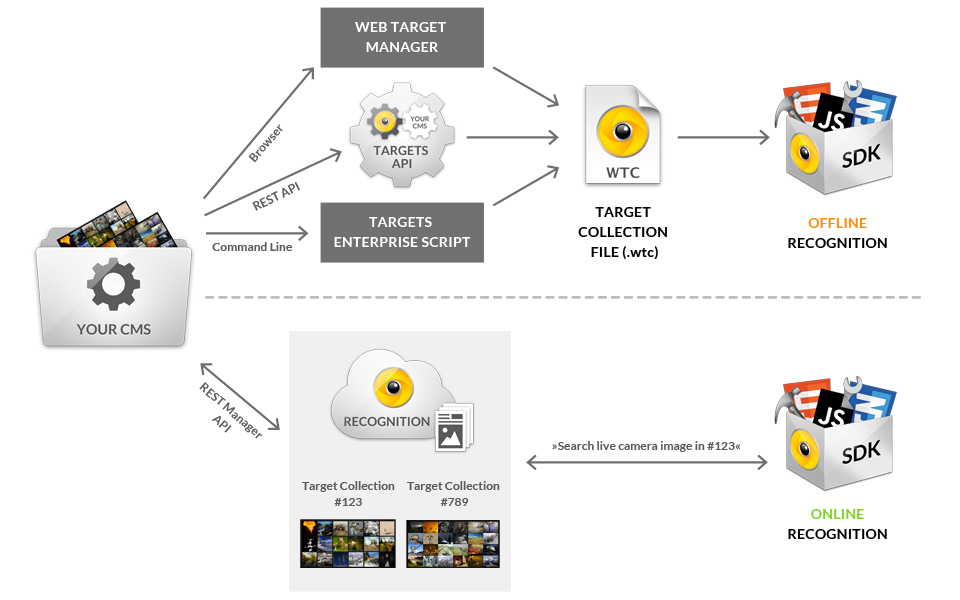
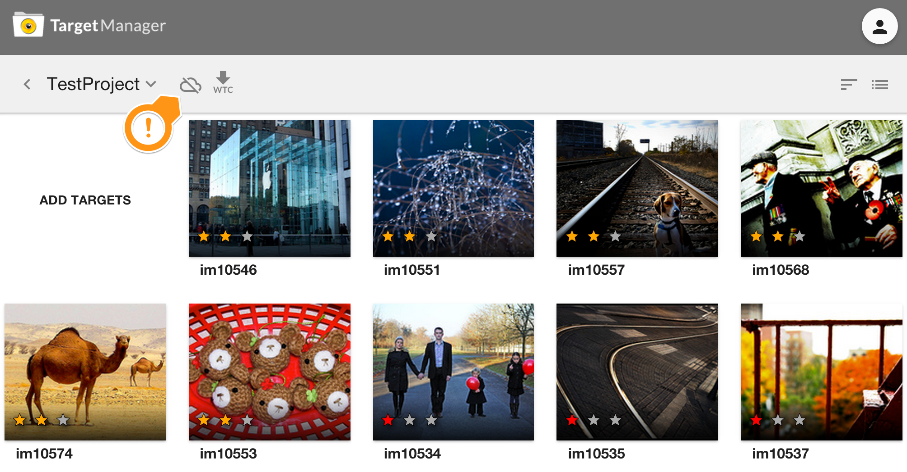
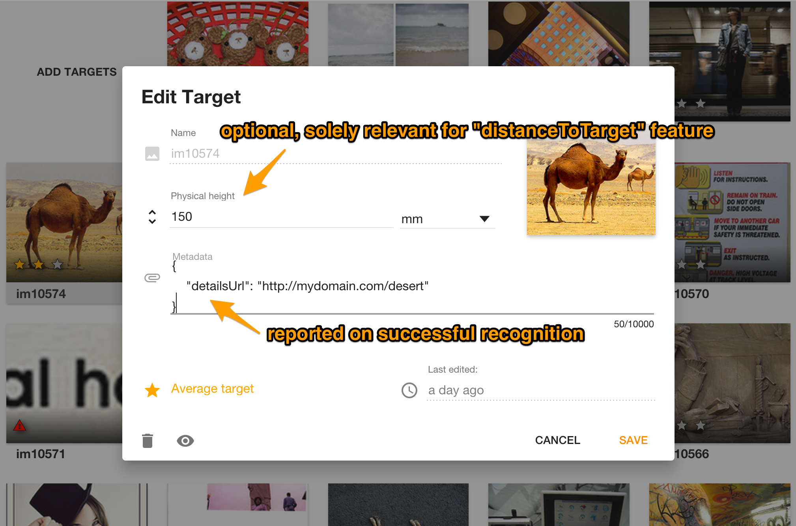
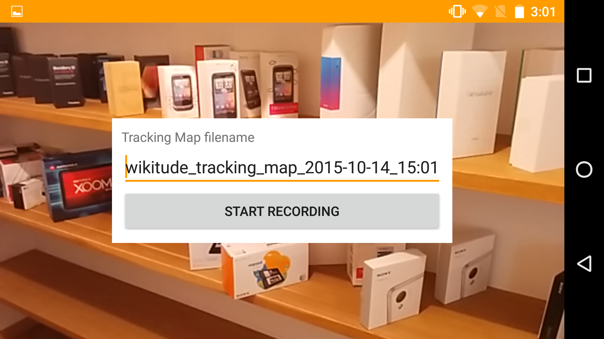
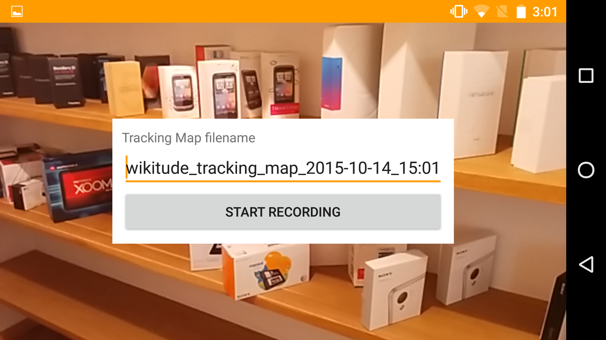
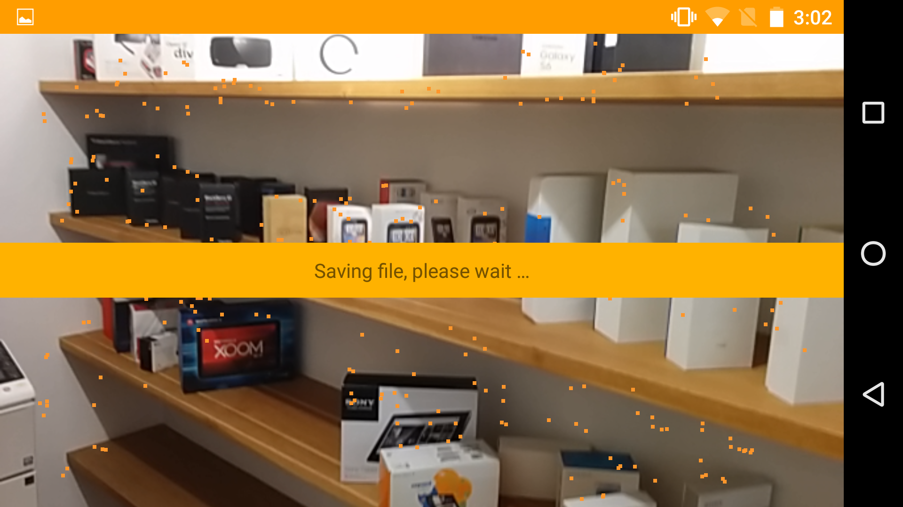
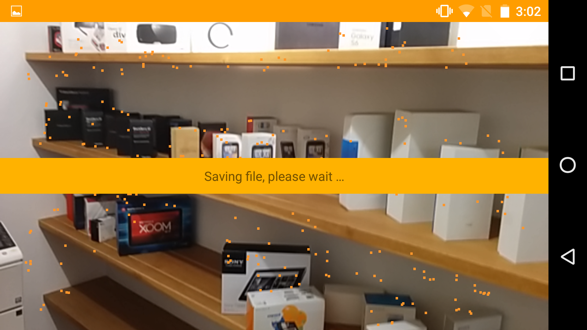

Getting started
Welcome to the Wikitude SDK. This document is designed to help you from your very first steps with the Wikitude SDK all the way through to advanced concepts and examples for developing your augmented reality project.
Recommended Usage of this Documentation
The documentation is arranged in a way to guide you through the various steps in your development process. We recommend following each of the steps outlined below and reading the documentation in the order displayed.
Setup your project
In this section we describe the necessary steps to setup a project in a detailed guide.
View the samples
All of the included samples are complete Android projects and apps. Browse through this section and get an idea of what the Wikitude SDK Native API is capable of. The relevant parts of the samples are described in more detail to highlight the applied concepts and patterns. These examples are designed to help you get off to a great start with the Wikitude SDK.
Viewing samples based on vision based augmented reality requires the corresponding reference images. All of them are available directly in the description of the sample or available as a collection on this page, which you can either view on the screen or print.
The Wikitude Native SDK - Augmented Reality for your own app
The Wikitude Native SDK is a software library and framework for mobile apps used to create augmented reality experiences.
As opposed to the Wikitude SDK which uses a JavaScript API the Wikitude Native SDK allows to create your AR experiences directly in Java and OpenGL.
Architecture of the Wikitude SDK

The image above shows the different components of the Wikitude SDK and possible approaches for creating augmented reality apps. Each of these approaches is based on a certain development environments (IDE) and platforms:
- Computer Vision Engine: The computer vision engine is a core component of the Wikitude SDK and used by all platforms. It is not directly accessible, but wrapped either by the Native API or the JavaScript API.
- Wikitude SDK - Native API: Provides access to the Wikitude computer vision engine natively for Android (Java) and iOS (ObjC). It also can load plugins via the Wikitude Plugins API. (NOTE: Wikitude SDK plugins have nothing to do with the Cordova or Unity Plugin concept.)
- Wikitude SDK - JavaScript API: Allows to build augmented reality worlds on basis of HTML and JavaScript. It is available for Android and iOS. The JavaScript API provides access to the functionality of the computer vision engine, location based AR, the Plugins API and dedicated rendering functionality.
- Wikitude SDK - Plugins API: An API to connect your own plugins to the Wikitude SDK.
- Wikitude SDK - Cordova Plugin: On top of the JavaScript API the Cordova plugin allows to use the Wikitude SDK in combination with Apache Cordova.
- Wikitude SDK - Titanium Module: On top of the JavaScript API the Titanium module allows to use the Wikitude SDK in combination with Titanium.
- Wikitude SDK - Unity Plugin: On top of the Native API the Unity plugin allows to use the Wikitude SDK in combination with Unity.
- Wikitude SDK - Xamarin Component: On top of the JavaScript API the Cordova plugin allows to use the Wikitude SDK in combination with Xamarin.
The Wikitude Developer Portal
The Wikitude Developer Section should be your first stop when you have specific development related questions. The portal hosts a very active Developer Community Forum where Wikitude staff members are constantly assisting other developers with helpful tips and advice. A Knowledge Base helps with various questions.
Feedback and Contact
We are always interested in your feedback and suggestions how we can improve this documentation. Please use the contact form on our website or visit us on Google+ or Facebook
Setup Guide Android Native API
Project Setup
Create a new Android Studio Application Project (There is also a working SampleProject bundled in this SDK, where all these steps are already made)
Copy the file
libs/wikitude_native_sdk.aarinto the libs folder of your module. (project root/app/libs)Open
build.gradle (Module: app), add thewikitudesdk.aaras a dependency and tell gradle to search the libs folder, like in the code below.
android {
...
}
dependencies {
compile fileTree(dir: 'libs', include: ['*.jar'])
compile (name: 'wikitudesdk_native_sdk', ext:'aar')
...
}
repositories {
flatDir{
dirs 'libs'
}
}
- If you already purchased a license, please set the applicationId to the package name you provided us with.
defaultConfig {
applicationId "xxxx"
}
- Add the following permissions and features to your AndroidManifest.xml
<uses-permission android:name="android.permission.CAMERA" />
<uses-permission android:name="android.permission.WRITE_EXTERNAL_STORAGE" />
<uses-permission android:name="android.permission.INTERNET" />
<uses-feature android:glEsVersion="0x00020000" android:required="true" />
<uses-feature android:name="android.hardware.camera" android:required="true" />
- Also in the Android manifest define following config changes for the activity which adds the OpenGL view
<activity
android:name="YOUR_PACKAGE_NAME.YOUR_ACTIVITY_NAME"
android:configChanges="orientation|keyboardHidden|screenSize" />
- Read this chapter on how to obtain a free trial key, which you will later pass to the Wikitude Native SDK.
Supported Android Devices
Wikitude SDK is running on devices fulfilling the following requirements:
| Sensor-based AR (Geo-AR) | Image recognition and tracking | |
|---|---|---|
| Android |
|
|
Requirements for other operating systems and platforms are listed in this overview.
Supported Devices
Wikitude SDK is running on devices fulfilling the following requirements:
| Sensor-based AR (Geo-AR) | Image recognition and tracking | |
|---|---|---|
| Android |
|
|
| Epson |
|
|
| Google Glass |
|
|
| iOS |
|
|
| Vuzix |
|
|
How to obtain a free trial license
The Wikitude SDK requires a valid license key to be able to run properly. An empty or missing license key will block the augmented reality view from showing any meaningful content. You will see a watermark across the screen with the words License Key Missing. All JavaScript API calls will be ignored and not interpreted.
When downloading the Wikitude SDK you will be forwarded to the license generation page, where a trial license key is automatically generated for you.
Copy the key into your app, which will unlock the trial mode of the Wikitude SDK. The trial mode of the Wikitude SDK contains the full feature set of the Wikitude SDK but will show a Trial watermark across the screen.
Each trial license key is valid for every application ID on every operating system. You can use the same trial license key in multiple apps.
Where should I enter the license key
Android Native API
To use the Wikitude Android SDK you need to provide a valid license key to the onCreate lifecycle method of the Wikitude SDK object.
Create a StartupConfiguration object and pass it the license as a string and then call the onCreate(getApplicationContext(), startupConfiguration) method.
WikitudeSDKStartupConfiguration startupConfiguration = new WikitudeSDKStartupConfiguration(WikitudeSDKConstants.WIKITUDE_SDK_KEY, CameraSettings.CameraPosition.BACK, CameraSettings.CameraFocusMode.CONTINUOUS);
_wikitudeSDK.onCreate(getApplicationContext(), startupConfiguration);
Examples
The following examples should give you an overview of the capabilities offered by the Wikitude SDK. Each sample is capable of running without modifications on all supported platforms.
The Sample App is a fully functional sample project either for Android or iOS. You can easily import it into Android Studio or Xcode and work from there. The user interface is kept very simple and shows a list to select the sample you are interested.
Wikitude SDK Android Native API Examples
This section describes the Native SDK Sample project in detail and highlights the main features and use-cases of the Wikitude SDK.
The project is part of the SDK bundle and is an Android Studio project, ready to run on any of the supported Android devices.
Note: You cannot run the Wikitude SDK project on an Android Emulator due to OpenGL restrictions.
Run through the setup guide, install the sample project on your device and scroll through the sample list.
Setup
- Download latest Android SDK through the Android Studio Bundle (either Mac OS or Windows)
- From the main menu bar, select
File->Openwhich will open the import wizard. - Navigate to the
NativeSDKExamplesproject folder from the package you downloaded from us. - Click
Chooseto open the Example project. - Use an Android device that has all hard- and software requirements (see Supported Devices).
- Enable USB debugging on your device.
- Plug in the device via USB.
- Back in Android Studio click on the green "Play"-Button to install the Example application on your device.
Client Recognition
This example shows how to recognize images in the viewfinder and overlay it with images.
For a better understanding, here are some terms that will be used in the following and other section of this documentation related to vision-based augmented reality.
Target: A 2D target image and its associated extracted data that is used by the tracker to recognize an image.
Target Collection: An archive storing a collection of 2D targets that can be recognized by the tracker. A target collection can hold up to 1000 targets. Target collections are stored as
.wtcfiles3D Tracking Map: A tracking map is the equivalent of a target for 3D tracking. The map contains the relevant characteristics of a three-dimensional object. In order to recognize and track 3D objects you need to record a map first and then load this map. Maps are stored as
.wtmfiles.ClientTracker: The tracker analyzes the live camera image and detects the 2D targets stored in its associated target collection. Multiple trackers can be created, however only one tracker can be active for recognition at any given time.
Simple 2D Client Tracking Android
In this section we will go through the code of the SimpleClientTrackingActivity, which you can find in the example application under the package com.wikitude.samples.recognition.client. We will discuss general concepts on how to use the Wikitude Native SDK as we go along, please don't skip this section even if you are for example only interested in cloud recognition.
The WikitudeSDK class is structured to be used in a standard Android activity and to make use of the activities life cycle events. We will use interfaces to communicate to the WikitudeSDK which type of rendering method we would like to use and to provide the necessary callbacks for Client- and Cloud-Trackers.
First let us have a look at the declaration of the activity class.
public class SimpleClientTrackingActivity extends Activity implements ClientTrackerEventListener, ExternalRendering {
...
}
We subclass the standard Android activity and implement the interfaces ClientTrackerEventListener and ExternalRendering. Later on when we create the instance of the WikitudeSDK we will pass the this pointer of our activity to the WikitudeSDK constructor and this way indicate our chosen type of rendering. In this example we will use external rendering, for details on how to setup the rendering and the difference between internal and external rendering please read through the section on rendering.
The next step we will take is create an instance of the WikitudeSDK class. This and the StartupConfiguration are the only objects you will need to create by yourself, every other object will be created by factory methods of the WikitudeSDK instance.
We are now going through each method of the SimpleClientTrackingActivity class, starting with onCreate. In the onCreate method we instantiate an instance of the WikitudeSDK, and an instance of the WikitudeSDKStartupConfiguration, which will hold our license key. If you do not have a license key yet, read this chapter on how to obtain a free trial key. After that we are ready to propagate the onCreate life cycle event to the Wikitude SDK. It is very important that you do propagate onCreate, onPause and onResume otherwise the Wikitude SDK won't be able to properly manage its resources which will lead to unexpected behavior.
After we called the WikitudeSDK onCreate method the SDK is initialized and we are now able to create a ClientTracker. To do that we get the TrackerManager from the WikitudeSDK instance and call create2dClientTracker passing the url to the WTC file. Since we are loading an asset on the device we indicate that by starting the url with the string file:///android_asset/ and add the path to the file starting from the asset root directory.
To get notified when the Tracker finished loading, recognized a target and so on we register the Activity which implements ClientTrackerEventListener as a Listener on the newly created Tracker.
@Override
protected void onCreate(Bundle savedInstanceState) {
super.onCreate(savedInstanceState);
_wikitudeSDK = new WikitudeSDK(this);
WikitudeSDKStartupConfiguration startupConfiguration = new WikitudeSDKStartupConfiguration(WikitudeSDKConstants.WIKITUDE_SDK_KEY);
_wikitudeSDK.onCreate(getApplicationContext(), startupConfiguration);
ClientTracker tracker = _wikitudeSDK.getTrackerManager().create2dClientTrackerFromUrl("file:///android_asset/magazine.wtc");
tracker.registerTrackerEventListener(this);
}
The next important method to look at is the onRenderExtensionCreated method. Since we decided to use the external rendering functionality by implementing ExternalRendering, the WikitudeSDK provides us with a RenderExtension. The RenderExtension interface exposes the same methods as the standard GLSurfaceView.Renderer. In your custom GLSurfaceView.Renderer the first thing to do in every method is to always call the same method on the provided RenderExtension. To be able to that we pass the RenderExtension to the constructor of our Renderer, create our SurfaceView, initialize a Driver and set our SurfaceView as our content view.
@Override
public void onRenderExtensionCreated(final RenderExtension renderExtension_) {
_glRenderer = new GLRenderer(renderExtension_);
_view = new CustomSurfaceView(getApplicationContext(), _glRenderer);
_driver = new Driver(_view, 30);
setContentView(_view);
}
Next we will have a look at the ClientTrackerEventListener interface. The onErrorLoading method will be called like the name suggest when the Wikitude SDK wasn't able to load the client tracker. The most likely cause of this to happen would be that either the path to the WTC file was incorrect or the WTC was corrupted. The onTrackerFinishedLoading method will be called once when the tracker was successfully loaded. When the client tracker first recognizes a target it will call onTargetRecognized providing you with the recognized target name. When the client tracker starts tracking this target it will call onTracking continuously until it loses the target and finishes tracking with a call to onTargetLost.
The RecognizedTarget object provided in the onTracking method contains information about the tracked target like the name, the distance to the target and most importantly the matrices which describe where on the camera frame the target was found. Since we need this information to draw on the target we pass the object to our renderer in the 'onTracking' method and remove it when we lose the target in the onTargetLost method.
@Override
public void onErrorLoading(final ClientTracker clientTracker_, final String errorMessage_) {
Log.v(TAG, "onErrorLoading: " + errorMessage_);
}
@Override
public void onTrackerFinishedLoading(final ClientTracker clientTracker_, final String trackerFilePath_) {
}
@Override
public void onTargetRecognized(final ClientTracker tracker_, final String targetName_) {
}
@Override
public void onTracking(final ClientTracker tracker_, final RecognizedTarget recognizedTarget_) {
_glRenderer.setCurrentlyRecognizedTarget(recognizedTarget_);
}
@Override
public void onTargetLost(final ClientTracker tracker_, final String targetName_) {
_glRenderer.setCurrentlyRecognizedTarget(null);
}
2D Extended Client Tracking Android
Extended tracking is an optional mode you can set for each target separately. In this mode the Wikitude SDK will try to continue to scan the environment of the user even if the original target image is not in view anymore. So the tracking extends beyond the limits of the original target image. The performance of this feature depends on various factors like computing power of the device, background texture and objects.
Based on the previous sample, to enable Extended Tracking for a tracker you need to provide a String array which defines which targets should be extended. In this sample we simply set a wildcard * so that all targets in this tracker are extended.
ClientTracker tracker = _wikitudeSDK.getTrackerManager().create2dClientTracker("file:///android_asset/magazine.wtc", new String[]{"*"});
3D Client Tracking Android
In this example we will take a look at how to use the Wikitude TrackingMapRecorder and 3D ClientTracker to enable 3D Tracking. If you haven't already done so please read through the first section on 2D Tracking before continuing here. Essential concepts like how to setup rendering or how to use a Wikitude Tracker are explained there and won't be repeated here. Similar if you don't already know why we need to record a Tracking Map or what to expect from 3D Tracking in general please read through the introduction to 3D tracking.
After we setup our activity to use ExternalRendering we will initialize the user interface in the onRenderExtensionCreated callback method. Let's look at the first lines of code below.
@Override
public void onRenderExtensionCreated(final RenderExtension renderExtension_) {
... setup GL view ...
showStartDialog();
...
}
private void showStartDialog() {
AlertDialog.Builder builder = new AlertDialog.Builder(ClientTracking3DActivity.this);
builder.setNegativeButton("Leave Example", new DialogInterface.OnClickListener() {
...
});
builder.setPositiveButton("Start Recording", new DialogInterface.OnClickListener() {
public void onClick(DialogInterface dialog, int id) {
_wikitudeSDK.getTrackingMapRecorder().startRecording();
_trackingQualityIndicator.setVisibility(View.VISIBLE);
_stopButton.setVisibility(View.VISIBLE);
_stopButton.setEnabled(true);
}
});
...
dialog.show();
}
The first thing we do in the onRenderExtensionCreated method after setting up rendering is calling the private method showStartDialog. The purpose of the start dialog is to provide the user with some information about what he needs to do and a way to start the map recording. We activate the positive button of the AlertDialog by setting the title to Start Recording and passing an OnClickListener. In this OnClickListener we start the Tracking Map recording by getting the TrackingMapRecorder from the WikitudeSDK instance and calling startRecording. We also update the UI by setting the necessary components to visible. We will talk about what those components do later in this section.
@Override
public void onRenderExtensionCreated(final RenderExtension renderExtension_) {
... setup GL view ...
... show start dialog ...
_wikitudeSDK.getTrackingMapRecorder().registerTrackingMapRecorderEventListener(new TrackingMapRecorderEventListener() {
@Override
public void onFinishedSavingTrackingMap(File file) {
...
}
@Override
public void onErrorSavingTrackingMap(String errorMessage) {
...
}
@Override
public void onTrackingMapRecordingQualityChanged(final int oldTrackingQuality, final int newTrackingQuality) {
...
}
@Override
public void onTrackingMapRecordingCanceled() {
...
}
});
...
The next thing we do in the onRenderExtensionCreated method is registering a TrackingMapRecorderEventListener by calling registerTrackingMapRecorderEventListener on the TrackingMapRecorder we get from the WikitudeSDK instance. The TrackingMapRecorderEventListener interface exposes several callbacks to us. In the following we will go through the implementation of each of them one by one, starting with the onFinishedSavingTrackingMap method.
_wikitudeSDK.getTrackingMapRecorder().registerTrackingMapRecorderEventListener(new TrackingMapRecorderEventListener() {
@Override
public void onFinishedSavingTrackingMap(File file) {
runOnUiThread(new Runnable() {
@Override
public void run() {
saveMessage.setVisibility(View.INVISIBLE);
_stopButton.setVisibility(View.INVISIBLE);
}
});
_wikitudeSDK.getTrackerManager().create3dClientTracker(file.getAbsolutePath()).registerTrackerEventListener(ClientTracking3DActivity.this);
}
...
}
The onFinishedSavingTrackingMap callback will be called when the TrackingMapRecorder successfully finished saving the recording to file. We will react to that fact by getting the UI ready for tracking by removing all visible UI components. After we cleared the UI we get the TrackingManager from the WikitudeSDK instance and create a new 3D ClientTracker by calling create3dClientTracker passing the path to the newly created Tracking Map file. As a result of this call the WikitudeSDK will pass back to us the ClientTracker instance it just created for us. We use it right away to register our Activity as a TrackerEventListener. The implementation of the TrackerEventListener callbacks is the same as in the first example of this chapter so we won't go into detail about it here.
_wikitudeSDK.getTrackingMapRecorder().registerTrackingMapRecorderEventListener(new TrackingMapRecorderEventListener() {
...
@Override
public void onErrorSavingTrackingMap(String errorMessage) {
Log.v(TAG, errorMessage);
}
...
}
The second callback method of the TrackingMapRecorderEventListener is the onErrorSavingTrackingMap. This method will be called by the TrackingMapRecorder if there was an error saving the Tracking Map from memory to file. This could be for several reasons but since Tracking Maps can get quite large with longer recordings the most likely one is that there is not enough storage space left on the device. In this example we just log the error message but if you are using the TrackingMapRecorder in a production app, you probably want to react on the error in some way.
_wikitudeSDK.getTrackingMapRecorder().registerTrackingMapRecorderEventListener(new TrackingMapRecorderEventListener() {
...
@Override
public void onTrackingMapRecordingQualityChanged(final int oldTrackingQuality, final int newTrackingQuality) {
runOnUiThread(new Runnable() {
@Override
public void run() {
_currentTrackingQuality = newTrackingQuality;
switch (newTrackingQuality) {
case -1:
_trackingQualityIndicator.setBackgroundColor(Color.parseColor("#FF3420"));
_trackingQualityIndicator.setText(R.string.tracking_quality_indicator_bad);
break;
case 0:
_trackingQualityIndicator.setBackgroundColor(Color.parseColor("#FFD900"));
_trackingQualityIndicator.setText(R.string.tracking_quality_indicator_average);
break;
default:
_trackingQualityIndicator.setBackgroundColor(Color.parseColor("#6BFF00"));
_trackingQualityIndicator.setText(R.string.tracking_quality_indicator_good);
}
}
});
}
...
}
Since it can be hard to tell when your recording reached sufficient quality to be used for tracking, the TrackingMapRecorder will update us in the onTrackingMapRecordingQualityChanged method about the current map status. It will pass -1 if the least necessary quality isn't reached yet, 0 as soon as tracking with this map will be ok but not great and something higher than 0 when the desired quality was reached. We react to all three indications by setting the trackingQualityIndicator UI component to the appropriate state.
_wikitudeSDK.getTrackingMapRecorder().registerTrackingMapRecorderEventListener(new TrackingMapRecorderEventListener() {
...
@Override
public void onTrackingMapRecordingCanceled() {
showStartDialog();
}
...
}
The last of the TrackingMapRecorderEventListener callbacks will be called by the TrackingMapRecorder after a recording was canceled. After you canceled a recording you will need to wait till this method is called to start a new map recording. This is exactly what we do in this example by showing the initial start dialog to the user.
@Override
public void onRenderExtensionCreated(final RenderExtension renderExtension_) {
...
_stopButton = (Button) findViewById(R.id.client_tracking_3d_stop_recording);
_stopButton.setOnClickListener(new View.OnClickListener() {
@Override
public void onClick(View v) {
_stopButton.setVisibility(View.INVISIBLE);
_trackingQualityIndicator.setVisibility(View.INVISIBLE);
if (_currentTrackingQuality > 0) {
saveMessage.setVisibility(View.VISIBLE);
deleteTemporaryTrackingMap();
_wikitudeSDK.getTrackingMapRecorder().stopRecording(TRACKING_MAP_FILENAME);
} else {
showConfirmStopDialog();
}
}
});
...
}
After we implemented all TrackingMapRecorder callbacks the last thing we do in the onRenderExtionsionCreated method is implement the OnClickListener of the "Stop Recording" button. When the "Stop Recording" button is clicked the first thing we do is clear up the UI. Then we check if the last tracking quality indicator value was already high enough for the best possible tracking quality. If it was we show a save message to the user, clean up the last recording if there is one and stop and save the recording by getting the TrackingMapRecorder and calling stopRecording passing the name of the file the map should be stored in. Please note that you only need to pass the name of the file without any path information. All recordings will be save in external storage under Android/data/com.wikitude.nativesdksampleapp/files.
If the tracking quality indicator value indicates a bad or average recording quality we show the user a confirmation dialog, by calling the private method showConfirmStopDialog.
private void showConfirmStopDialog() {
AlertDialog.Builder builder = new AlertDialog.Builder(ClientTracking3DActivity.this);
builder.setNegativeButton("Restart", new DialogInterface.OnClickListener() {
@Override
public void onClick(DialogInterface dialog, int which) {
_wikitudeSDK.getTrackingMapRecorder().cancelRecording();
}
});
builder.setPositiveButton("Continue", new DialogInterface.OnClickListener() {
public void onClick(DialogInterface dialog, int id) {
deleteTemporaryTrackingMap();
_wikitudeSDK.getTrackingMapRecorder().stopRecording(TRACKING_MAP_FILENAME);
}
});
builder.setMessage("In order to experience a well working 3d tracking example, please continue recording until the quality indicator says 'Good'.")
.setTitle("Tracking Map quality not sufficient");
AlertDialog dialog = builder.create();
dialog.setCancelable(false);
dialog.show();
}
In the confirm stop dialog we give the user the option to either restart the recording or continue to save the recording. If the user decides to restart we cancel the recording by calling cancelRecording on the TrackingMapRecorder. If the user decides to use the map anyway we stop the recording like above.
Cloud Recognition
This example shows how to recognize images on a cloud server and then overlay it with augmentations utilizing the CloudTracker class.
For a better understanding, here are some terms that will be used in the following and other sections of this documentation related to vision-based augmented reality.
Target: An image and its associated extracted data that is used to recognize an image.
Target Collection: A group of
targetsthat are searched together. Think of it as a directory, which contains all your images you want to search. The Wikitude SDK can work with two different sorts ofTarget Collections- On-device Target Collection: a static
wtcfile containing the extracted data of your images. Can consist of up to 1,000 images. - Cloud Target Collection: A target collection stored on the Wikitude server. See
Cloud Archivebelow. Can consist of up to 50,000 images.
- On-device Target Collection: a static
Cloud Archive: An archive stored on the server that is optimized for cloud-based recognition. It is generated from a
Target Collectionand is used in combination withCloudTracker.CloudTracker: Instead of analysing and computing the live camera feed directly on the device like the
ClientTracker, theCloudTrackerwill send the image(s) taken by the camera to the Wikitude Cloud Recognition server. The server will then do the hard work of trying to match the image with your targets in the specified cloud archive. Beside the benefit of searching in large image database using theCloudTrackerinstead ofClientTrackerhas also a positive impact on the general performance in most cases. Especially when using a large target collection and on older devices.
For both Cloud Recognition samples below we will use external rendering if you don't know what that means please go through the section on rendering before starting here.
The CloudTracker is able to run in two modes, we call them on-click and continuous. In On-Click mode a single recognition cycle will be executed, in continuous mode the recognition will be started in a variable interval. You can find both examples discussed in the following in our sample application under the package com.wikitude.recognition.cloud.
Regional server endpoints
Before we get started please note that you have to choose which regional-distributed Wikitude server the SDK should contact.
The cloud recognition server region can be selected by calling setCloudRecognitionServerRegion of the TrackerManager. Every CloudTracker created after this call, will use the chosen region. In the following code snippet we will change the Cloud Recognition server location from the default setting of Europe to China.
_wikitudeSDK.getTrackerManager().setCloudRecognitionServerRegion(TrackerManager.ServerRegion.CHINA);
On-Click Cloud Recognition
We will now go through the class OnClickCloudTrackingActivity of our sample application, starting with the onCreate method. In onCreate after creating an instance of the WikitudeSDK, we obtain the TrackerManager and call create2dCloudTracker passing our authentication token and target collection id. On the CloudTracker instance returned by the TrackerManager we call registerTrackerEventListener passing this to register our activity as a listener for this particular CloudTracker. For this to work, we implemented CloudTrackerEventListener on our activity.
public class OnClickCloudTrackingActivity extends Activity implements CloudTrackerEventListener, ExternalRendering {
...
@Override
protected void onCreate(Bundle savedInstanceState) {
...
_wikitudeSDK.onCreate(getApplicationContext(), startupConfiguration);
_cloudTracker = _wikitudeSDK.getTrackerManager().create2dCloudTracker("b277eeadc6183ab57a83b07682b3ceba", "54e4b9fe6134bb74351b2aa3");
_cloudTracker.registerTrackerEventListener(this);
}
CloudTrackerEventListener defines callbacks which enable the CloudTracker to communicate its status. On one hand we receive notifications about the loading process and on the other hand we receive updates concerning the tracking process. Let's first have a look at the methods concerning the loading process. The method onTrackerFinishedLoading will be called, when the CloudTracker was successfully loaded and initialized. In this example we do not have a reason to react on that, but you could for example do some initializations to be ready when the CloudTracker recognizes a target. The onTrackerLoadingError method will be called when there was a problem loading the CloudTracker. We'll receive an errorMessage, containing more information about the problem. For debugging purposes we just log the error for now. In a real world project, were you already tested your app and know it won't be some small mistake like for example a wrong target collection id, you probably want to remove the log and for example try to load the CloudTracker again.
@Override
public void onTrackerFinishedLoading(final CloudTracker cloudTracker_) {
}
@Override
public void onTrackerLoadingError(final CloudTracker cloudTracker_, final String errorMessage_) {
Log.d(TAG, "onTrackerLoadingError: " + errorMessage_);
}
We had a look at the loading process callbacks above. Now let's move on to the callbacks concerning the tracking process. The methods onTargetRecognized as well as onRecognitionSuccessful will be called when the CloudTracker first recognizes one of your targets. In this example we do not react on the onTargetRecognized call, because we do not care which of our targets were recognized, but again in a real world example you could prepare your renderer for the target to be tracked. The onRecognitionSuccessful method is unique to the CloudTracker and not available in the ClientTracker interface. It will be passed a JSONObject containing meta information you defined for this target when creating your Cloud Archive. For now we will just display the contents in a standard Edittext ui component so you can have a look.
After the call to onTargetRecognized the next calls will be to onTracking. On this calls the CloudTracker will pass an instance of the RecognizedTarget class containing information about the current target. Besides general information about the target like the name of the target and distance to the target, this object also contains matrices which define the location of the target in the current frame, we pass the object to our renderer instance so it can be used to render something on or around the target. If the 'CloudTracker' isn't able to track the current target any longer it will call the onTargetLost method. In this case we will remove the last RecognizedTarget object from our renderer since it won't be updated anymore until the CloudTracker recognizes a target again.
The last method onRecognitionFailed will be called if the last recognition attempt was unsuccessful, in this case we will display an error message to the user so that she/he tries again.
@Override
public void onTargetRecognized(final CloudTracker cloudTracker_, final String targetName_) {
}
@Override
public void onTracking(final CloudTracker cloudTracker_, final RecognizedTarget recognizedTarget_) {
_glRenderer.setCurrentlyRecognizedTarget(recognizedTarget_);
}
@Override
public void onTargetLost(final CloudTracker cloudTracker_, final String targetName_) {
_glRenderer.setCurrentlyRecognizedTarget(null);
}
@Override
public void onRecognitionSuccessful(final CloudTracker cloudTracker_, final JSONObject jsonObject_) {
if (jsonObject_.toString().length() > 2) {
runOnUiThread(new Runnable() {
@Override
public void run() {
EditText targetInformationTextField = (EditText) findViewById(R.id.on_click_cloud_tracking_target_information);
targetInformationTextField.setText(jsonObject_.toString(), TextView.BufferType.NORMAL);
targetInformationTextField.setVisibility(View.VISIBLE);
}
});
}
}
@Override
public void onRecognitionFailed(final CloudTracker cloudTracker_, final int errorCode_, final String errorMessage_) {
Toast toast = Toast.makeText(getApplicationContext(), "Recognition failed!", Toast.LENGTH_SHORT);
toast.show();
}
To be able to actually start the recognition we define a button and set an anonymous OnClickListener which calls the CloudTracker recognize method.
@Override
public void onRenderExtensionCreated(final RenderExtension renderExtension_) {
...
Button recognizeButton = (Button) findViewById(R.id.on_click_cloud_tracking_recognize_button);
recognizeButton.setOnClickListener(new View.OnClickListener() {
@Override
public void onClick(final View view_) {
_cloudTracker.recognize();
}
});
}
Continuous Cloud Recognition
On-Click recognition is useful in some particular cases, but more often than not you probably want to use continuous recognition. For continuous cloud recognition we set an interval in which the CloudTracker automatically calls the recognize function.
Since we want to make sure the CloudTracker finished loading and is ready to be used before we start recognitions, we we'll use the onTrackerFinishedLoading callback to start the continuous recognition. To do that we call startContinuousRecognition on the CloudTracker instance passing an interval in milliseconds. Since mobile internet can be quite bad, we recommend an interval between 1500 and 2000ms.
@Override
public void onTrackerFinishedLoading(final CloudTracker cloudTracker_) {
cloudTracker_.startContinuousRecognition(1500);
}
As already mentioned before internet quality isn't always the best on mobile devices. If the Wikitude SDK notices that the cloud recogntion interval was set to low, the onRecognitionInterruption callback method will be called. The SDK will pass an adjusted interval which should be more appropriate for the current connection speed. In our example we'll reset the CloudTracker interval by calling startContinuousRecognition passing the suggested interval.
@Override
public void onRecognitionInterruption(final CloudTracker cloudTracker_, final double suggestedInterval_) {
cloudTracker_.startContinuousRecognition(suggestedInterval_);
}
Rendering
This example shows and explain how rendering works in combination with the Wikitude SDK Native API. There are two methods of rendering available in the Wikitude Native SDK. We call them internal and external rendering. Internal means the OpenGL view is setup by the Wikitude SDK and the SDK user can define custom rendering, that is executed by the Wikitude SDK. On the other hand external rendering means the SDK user sets up the OpenGL view and integrates the Wikitude SDK into this rendering setup.
External Rendering
To activate external rendering you need to pass an object implementing the ExternalRendering interface to the constructor of the WikitudeSDK class. In the following example this object will be an instance of the ExternalRenderingActivity class which you can find in our sample application under the package com.wikitude.samples.rendering.external.
public class ExternalRenderingActivity extends Activity implements ClientTrackerEventListener, ExternalRendering {
private WikitudeSDK _wikitudeSDK;
...
@Override
protected void onCreate(Bundle savedInstanceState) {
super.onCreate(savedInstanceState);
_wikitudeSDK = new WikitudeSDK(this);
In the method onRenderExtensionCreated which is defined by the ExternalRendering interface we receive a RenderExtension instance as a parameter. We pass that parameter to our OpenGL renderer which extends GLSurfaceView.Renderer. We also create a Driver which calls the Renderer 30 times per second to draw the current frame.
@Override
public void onRenderExtensionCreated(final RenderExtension renderExtension_) {
_glRenderer = new GLRenderer(renderExtension_);
_view = new CustomSurfaceView(getApplicationContext(), _glRenderer);
_driver = new Driver(_view, 30);
setContentView(_view);
}
The following code shows a very basic implementation of a GLSurfaceView.Renderer. Please note that the first thing to do in every method is to call the WikitudeSDK RenderExtension, otherwise the WikitudeSDK won't be able to render the camera frame or perform any image recognition.
public class GLRenderer implements GLSurfaceView.Renderer, RenderExtension {
private RenderExtension _wikitudeRenderExtension = null;
private RecognizedTarget _currentlyRecognizedTarget = null;
private StrokedRectangle _strokedRectangle;
public GLRenderer(RenderExtension wikitudeRenderExtension_) {
_wikitudeRenderExtension = wikitudeRenderExtension_;
}
@Override
public void onDrawFrame(final GL10 unused) {
if (_wikitudeRenderExtension != null) {
_wikitudeRenderExtension.onDrawFrame(unused);
}
if (_currentlyRecognizedTarget != null) {
_strokedRectangle.onDrawFrame(_currentlyRecognizedTarget);
}
}
@Override
public void onSurfaceCreated(final GL10 unused, final EGLConfig config) {
if (_wikitudeRenderExtension != null) {
_wikitudeRenderExtension.onSurfaceCreated(unused, config);
}
_strokedRectangle = new StrokedRectangle();
}
@Override
public void onSurfaceChanged(final GL10 unused, final int width, final int height) {
if (_wikitudeRenderExtension != null) {
_wikitudeRenderExtension.onSurfaceChanged(unused, width, height);
}
}
public void onResume() {
if (_wikitudeRenderExtension != null) {
_wikitudeRenderExtension.onResume();
}
}
public void onPause() {
if (_wikitudeRenderExtension != null) {
_wikitudeRenderExtension.onPause();
}
}
public void setCurrentlyRecognizedTarget(final RecognizedTarget currentlyRecognizedTarget_) {
_currentlyRecognizedTarget = currentlyRecognizedTarget_;
}
}
Internal Rendering
To activate internal rendering you need to pass an object implementing the InternalRendering interface to the constructor of the WikitudeSDK class. In the following example this object will be an instance of the InternalRenderingActivity which you can find in our sample application under the package com.wikitude.samples.rendering.internal.
public class InternalRenderingActivity extends Activity implements InternalRendering, ClientTrackerEventListener {
...
private WikitudeSDK _wikitudeSDK;
...
@Override
protected void onCreate(final Bundle savedInstanceState) {
super.onCreate(savedInstanceState);
_wikitudeSDK = new WikitudeSDK(this);
...
In the method provideRenderExtension which is defined by the InternalRendering interface we create an instance of our CustomRenderExtension and return it.
@Override
public RenderExtension provideRenderExtension() {
_renderExtension = new CustomRenderExtension();
return _renderExtension;
}
The CustomRenderExtension was defined like in the following code snippet. All defined methods will be called in the appropriate methods of the WikitudeSDK renderer which extends the standard Android GLSurfaceView.Renderer.
public class CustomRenderExtension implements GLSurfaceView.Renderer, RenderExtension {
private RecognizedTarget _currentlyRecognizedTarget = null;
private StrokedRectangle _strokedRectangle;
@Override
public void onDrawFrame(final GL10 unused) {
if (_currentlyRecognizedTarget != null) {
_strokedRectangle.onDrawFrame(_currentlyRecognizedTarget);
}
}
@Override
public void onSurfaceCreated(final GL10 unused, final EGLConfig config) {
_strokedRectangle = new StrokedRectangle();
}
@Override
public void onSurfaceChanged(final GL10 unused, final int width, final int height) {
}
public void onResume() {
}
public void onPause() {
}
public void setCurrentlyRecognizedTarget(final RecognizedTarget currentlyRecognizedTarget_) {
_currentlyRecognizedTarget = currentlyRecognizedTarget_;
}
}
Plugins API
This guide consists of multiple sections, first we discuss Wikitude SDK Plugins in general, than we talk about platform specifics and how to register a plugin with the Wikitude SDK and then we go through each of the sample plugins included with the Wikitude Example Applications.
- About Wikitude SDK Plugins
- Platform Specifics
- Registering Plugins
- QR & Barcode Plugin
- Face Detection Plugin
About Wikitude SDK Plugins
Technically a plugin is a class, either written in C++ or Java, that is derived from the Wikitude Plugin base class. Beside lifecycle handling and options to enable and disable the plugin, the Plugin class has four main methods that you can override cameraFrameAvailable which is called each time the camera has a new frame, update which is called after each image recogntion cycle as well as 'startRender' and 'endRender' which are called before and after the Wikitude SDK does its rendering.
The most important thing to remember when working with plugins is that they need to have a unique identifier! If the attempt is made to register a plugin with an identifier that is already known to the Wikitude SDK, the register method call will return false.
Plugin Base Class
class Plugin {
public:
Plugin(std::string identifier_);
~Plugin();
string getIdentifier() const; // returns a unique plugin identifier
bool processesColorCameraFrames(); // returns true if the plugins wants to process color frames instead of bw
void setEnabled(bool enabled_);
bool isEnabled();
string callJavaScript(string javaScriptSnippet); // evaluates the given JavaScript snippet in the currently loaded ARchitect World context.
protected:
void initialize(); // called when the plugin is initially added to the Wikitude SDK
void pause(); // called when the Wikitude SDK is paused e.g. the application state changes from active to background
void resume(uint pausedTime_); // called when the Wikitude SDK resumes e.g. from background to active state. pausedTime represents the time in milliseconds that the plugin was not updated.
void destroy(); // called when the plugin is removed from the Wikitude SDK
void cameraFrameAvailable(const Frame&; cameraFrame_); // called each time the camera has a new frame
void update(const vector<RecognizedTarget> recognizedTargets_); // called each time the Wikitude SDK renders a new frame
void startRender(); // called before any Wikitude SDK internal rendering is done
void endRender(); // called right after any Wikitude SDK internal rendering is done
protected:
string _identifier;
bool _enabled;
};
With those methods in place your plugin will be able to read the full camera image for your own purpose, where the YUV image is also processed in wikitudes computer vision engine.
Information about Recognized Targets
In case you have the wikitude SDK running with ongoing image recognition, the plugin API will populate the RecognizedTarget in the update method once an image has been recognized. The plugin can then work with class RecognizedTarget, which wraps the details of the target image in the camera view. With that you can read out the pose of the target image and use it for your purposes. Additionally the call contains the calculated distance to the recognized target
class RecognizedTarget {
public:
const string& getIdentifier() const; // the identifier of the target. The identifier is defined when the target is added to a target collection
const Mat4& getModelViewMatrix() const; // the model view matrix that defines the transformation of the target in the camera frame (translation, rotation, scale)
const Mat4& getProjectionMatrix() const;
const float getDistanceToCamera() const; // represents the distance from the target to the camera in millimeter
};
Passing values from within the plugin to the JavaScript part of your augmented reality experience is done via the addToJavaScriptQueue() method of the Plugin class. Using this function will execute any JavaScript code in the context of your augmented reality experience.
Platform Specifics
To be able to use a C++ Wikitude plugin on Android, it is necessary to create a binary from the C++ code for each supported CPU architecture. To make this process as easy as possible we prepared an Android NDK make file and and some template code which passes your plugin to the Wikitude SDK. In the following section we discuss how you need to adapt these templates so they'll work for your plugin.
Please note that if you would like to use multiple C++ plugins in your app, you will need to package all plugins in one shared library. This is necessary because we use JNI to register C++ plugins with the Wikitude SDK and the symbol to do that has to be unique.
Android C++ Wikitude Plugin Library Build
All files needed are located under the folder PluginBuilder in the Wikitude SDK Android package. If you didn't setup the Android NDK yet, please follow the official guide.
Let's take a look at the Android.mk file, located under SDKPackageRoot/PluginBuilder/jni. The first thing we do is declare a variable containing the path to the source files relative to the make files location and set LOCAL_PATH to this location. We define where all include files are located and which files need to be compiled. Since our Example Plugin uses Android log we link android native log.
LOCAL_PATH := $(call my-dir)/..
SRC_DIR := $(LOCAL_PATH)/src
include $(CLEAR_VARS)
LOCAL_PATH := $(SRC_DIR)
include $(CLEAR_VARS)
LOCAL_MODULE := samplePlugin
LOCAL_C_INCLUDES := $(SRC_DIR)
LOCAL_SRC_FILES := __YOUR_PLUGIN__.cpp JniRegistration.cpp Plugin.cpp
LOCAL_LDLIBS += -llog
include $(BUILD_SHARED_LIBRARY)
The PluginLoader/src folder contains various src files which are needed so your plugin will compile and link correctly. Please don't modify any of them except the __YOUR_PLUGIN__.h and __YOUR_PLUGIN__.cpp. One other file that needs some slight modifications is JniRegistration.cpp shown below. Adapt the include directive and the constructor call to your plugin name and if you would like to use multiple C++ plugins, feel free to add more plugins to the cPluginsArray array but adjust the numberOfPlugins count accordingly.
If you packaged multiple plugins in one shared library but would like to instantiate only a subset of those plugins you can pass an identifier to this method when loading the library from Java. You can then decide which plugins to create depending on the value of jPluginName.
#include <jni.h>
#include "Plugin.h"
#include "__YOUR_PLUGIN__.h"
extern "C" JNIEXPORT jlongArray JNICALL Java_com_wikitude_architect_PluginManager_createNativePlugins(JNIEnv *env, jobject thisObj, jstring jPluginName) {
int numberOfPlugins = 1;
jlong cPluginsArray[numberOfPlugins];
cPluginsArray[0] = (jlong) new __YOUR_PLUGIN__("com.example.plugin");
jlongArray jPluginsArray = env->NewLongArray(numberOfPlugins);
if (jPluginsArray != nullptr) {
env->SetLongArrayRegion(jPluginsArray, 0, numberOfPlugins, cPluginsArray);
}
return jPluginsArray;
}
To build the plugin binary files, navigate to the jni folder and call ndk-build. A libs folder will be created containing libraries for arm7, arm64 and intel. Copy the contents of the libs folder to YourProjectRoot/app/src/main/jniLibs.
Registering Plugins
Register C++ Plugin
To register a C++ plugin with the Wikitude Native SDK, get the PluginManager from the WikitudeSDK instance and call registerNativePlugin passing the name of your library. Do not add lib in front of the name or add the .so extension. If you register your Plugin in the onCreate method of your activity, please also make sure to call the onCreate method of the WikitudeSDK first. The following snippet comes from the BarcodePluginActivity of the Wikitude Native SDK Example application.
@Override
protected void onCreate(Bundle savedInstanceState) {
...
_wikitudeSDK.onCreate(getApplicationContext(), startupConfiguration);
...
_wikitudeSDK.getPluginManager().registerNativePlugins("barcodePlugin");
}
Register Java Plugin
To register a Java plugin with the Wikitude Native SDK, get the PluginManager from the WikitudeSDK instance and call registerPlugin passing an instance of your Plugin.
@Override
protected void onCreate(Bundle savedInstanceState) {
...
_wikitudeSDK.onCreate(getApplicationContext(), startupConfiguration);
...
_wikitudeSDK.getPluginManager().registerPlugin(new MyPlugin());
}
Barcode and QR code reader
This samples shows a full implementation of the popular barcode library ZBar into the Wikitude SDK. As ZBar is licensed under LGPL2.1 this sample can also be used for other projects.
ZBar is an open source software suite for reading bar codes from various sources, such as video streams, image files and raw intensity sensors. It supports many popular symbologies (types of bar codes) including EAN-13/UPC-A, UPC-E, EAN-8, Code 128, Code 39, Interleaved 2 of 5 and QR Code.
In the BarcodePluginActivity.onCreate method we register the bar code C++ plugin by getting the PluginManager from the Wikitude SDK and calling registerNativePlugins passing the name of the native library containing our C++ plugin. Right after that we call initNative(), which we declared as a native method and implement in the C++ plugin, to initialize the JavaVM pointer hold by the native plugin. We also implement the method onBarcodeDetected to display the contents of the scanned bar code. We'll later call this method from the bar code plugin.
public class BarcodePluginActivity extends Activity implements ClientTrackerEventListener, ExternalRendering {
private static String _codeContent;
...
@Override
protected void onCreate(Bundle savedInstanceState) {
...
_wikitudeSDK.getPluginManager().registerNativePlugins("barcodePlugin");
initNative();
}
...
public void onBarcodeDetected(final String codeContent_) {
_codeContent = codeContent_;
runOnUiThread(new Runnable() {
@Override
public void run() {
EditText targetInformationTextField = (EditText) findViewById(R.id.barcode_plugin_info_field);
targetInformationTextField.setText(codeContent_, TextView.BufferType.NORMAL);
targetInformationTextField.setVisibility(View.VISIBLE);
}
});
}
private native void initNative();
}
Now let's move to the plugins C++ code. First we'll have a look at the BarcodePlugin.h file. To create the bar code plugin we derive our BarcodePlugin class from wikitude::sdk::Plugin and override initialize, destroy, cameraFrameAvailable and update. We also declare the following member variables: _worldNeedsUpdate, _image, _imageScanner and _methodId. The _worldNeedsUpdate variable will later be used as an indicator if we need to update the View, _image and _imageScanner are classes from zBar which we'll use to scan for bar codes and _methodId will hold the method id of the onBarcodeDetected Java method.
extern JavaVM* pluginJavaVM;
class BarcodePlugin : public wikitude::sdk::Plugin {
public:
BarcodePlugin(int cameraFrameWidth, int cameraFrameHeight);
virtual ~BarcodePlugin();
virtual void initialize();
virtual void destroy();
virtual void cameraFrameAvailable(const wikitude::sdk::Frame& cameraFrame_);
virtual void update(const std::list<wikitude::sdk::RecognizedTarget>& recognizedTargets_);
protected:
int _worldNeedsUpdate;
zbar::Image _image;
zbar::ImageScanner _imageScanner;
private:
jmethodID _methodId;
};
We declare two variables in the global namespace one which will hold a pointer to the JavaVM and one which will hold a reference to our activity. To initialize those two variables we declared the initNative native method in the BarcodeActivity and implement it like in the following code snippet. All we do is get the pointer to the JavaVM from the JNIEnv and create a new global reference to the calling activity instance.
JavaVM* pluginJavaVM;
jobject activityObj;
extern "C" JNIEXPORT void JNICALL
Java_com_wikitude_samples_plugins_BarcodePluginActivity_initNative(JNIEnv* env, jobject obj)
{
env->GetJavaVM(&pluginJavaVM);
activityObj = env->NewGlobalRef(obj);
}
In the constructor we set _worldNeedsUpdate to zero indicating that there is no update necessary and initialize the zBar::Image member variable passing its constructor the width and height of the camera frame, the image format of Y800, set its data pointer to null and the data length to zero. We use the JavaVM to create an instance of JavaVMResource which is a helper class to manage the JavaVM, we provided in the file jniHelper.cpp. Next we get the Java environment from the JavaVMResource and initialize the _methodId member. In the destructor we delete the global reference to the activity object.
BarcodePlugin::BarcodePlugin(int cameraFrameWidth, int cameraFrameHeight) :
Plugin("com.wikitude.ios.barcodePluign"),
_worldNeedsUpdate(0),
_image(cameraFrameWidth, cameraFrameHeight, "Y800", nullptr, 0)
{
JavaVMResource vm(pluginJavaVM);
jclass clazz = vm.env->FindClass("com/wikitude/samples/plugins/BarcodePluginActivity");
_methodId = vm.env->GetMethodID(clazz, "onBarcodeDetected", "(Ljava/lang/String;)V");
}
BarcodePlugin::~BarcodePlugin()
{
JavaVMResource vm(pluginJavaVM);
vm.env->DeleteGlobalRef(activityObj);
}
In the initialize method we configure the zbar::ImageScanner by calling setConfig, enabling all supported bar codes. If you are only interested in one or some particular types of codes, first disabling all bar code types and manually enabling each particular type would be the better idea. That way performance could be greatly improved.
void BarcodePlugin::initialize() {
_imageScanner.set_config(zbar::ZBAR_NONE, zbar::ZBAR_CFG_ENABLE, 1);
}
We react to the destroy event by setting the current data pointer of the zbar::Image member to null and length to zero.
void BarcodePlugin::destroy() {
_image.set_data(nullptr, 0);
}
The last but most interesting methods are cameraFrameAvailable and update. In the cameraFrameAvailable method we set the data of our previously initialized zbar::Image member variable to the frame data we just received and the length of the data to frame width * frame height by calling set_data. We then start the scanning process by calling the scan method of our zBar::ImageScanner passing the zBar::Image member instance. The zBar::ImageScanner::scan method returns the number of detected bar codes in the image frame, we save this number in a local variable n. If n is not equal to the result of the last frame, which we saved to _worldNeedsUpdate member variable, we know there was a new bar code detected (meaning there was no bar code in the last frame) or that there was a bar code in the last frame and now there isn't. When that's the case, we do another check if there really was a bar code detected this frame and if there was we call the onBarcodeDetected Java method passing the code content.
void BarcodePlugin::cameraFrameAvailable(const wikitude::sdk::Frame& cameraFrame_) {
int frameWidth = cameraFrame_.getSize().width;
int frameHeight = cameraFrame_.getSize().height;
_image.set_data(cameraFrame_.getLuminanceData(), frameWidth * frameHeight);
int n = _imageScanner.scan(_image);
if ( n != _worldNeedsUpdate ) {
if ( n ) {
zbar::Image::SymbolIterator symbol = _image.symbol_begin();
JavaVMResource vm(pluginJavaVM);
jstring codeContent = vm.env->NewStringUTF(symbol->get_data().c_str());
vm.env->CallVoidMethod(activityObj, _methodId, codeContent);
}
}
_worldNeedsUpdate = n;
}
Face Detection
This samples shows how to add face detection to your Wikitude augmented reality experience using OpenCV.
The Face Detection Plugin Example consists of the C++ classes FaceDetectionPlugin, FaceDetectionPluginConnector and the Java class FaceDetectionPluginActivity. We will use OpenCV to detect faces in the current camera frame and OpenGL calls in Java to render a frame around detected faces.
The FaceDetectionPluginConnector acts as our interface between native code and Java and contains some JNI code, since JNI is not the focus of this example we won't go into detail about the implementation. If you would like to have a look at the complete code feel free to browse the source code in the Wikitude SDK release package.
We implement to Java native methods initNative and setFlipFlag. First will be used to initialize the plugin with the path to an OpenCV database, second will be used to notify the Plugin about orientation changes of the device. The other methods faceDetected, faceLost, projectionMatrixChanged and renderDetectedFaceAugmentation will be called by the Plugin to update the Java Android Activity, which controls the rendering.
extern "C" JNIEXPORT void JNICALL
Java_com_wikitude_samples_plugins_FaceDetectionPluginActivity_initNative(JNIEnv* env, jobject obj, jstring databasePath_)
{
...
}
extern "C" JNIEXPORT void JNICALL
Java_com_wikitude_samples_plugins_FaceDetectionPluginActivity_setFlipFlag(JNIEnv* env, jobject obj, jint flag)
{
...
}
... ctor / dtor ...
void FaceDetectionPluginConnector::faceDetected(const float *modelViewMatrix)
{
...
}
void FaceDetectionPluginConnector::faceLost()
{
...
}
void FaceDetectionPluginConnector::projectionMatrixChanged(const float *projectionMatrix)
{
...
}
void FaceDetectionPluginConnector::renderDetectedFaceAugmentation() {
...
}
Next we have a look at the FaceDetectionPlugin class. Again we we will leave out implementation details and focus on how we use the plugin itself. In the cameraFrameAvailable method we use OpenCV to detect faces in the current camera frame which the Wikitude SDK passes to the plugin. We call the observer which is an instance of the FaceDetectionPluginConnector to notify the Java activity about the result. The plugin base class defines startRender and endRender, depending on, if you would like to render on top of or below of all rendering the Wikitude SDK does, you choose one of them, or both to override. To render below all Wikitude rendering we choose startRender and again call the FaceDetectionPluginConnector instance which in turn calls the Android activity. Since we do not react on the result of the Wikitude SDK image recognition we leave update blank.
... ctor/dtor ...
void FaceDetectionPlugin::cameraFrameAvailable(const wikitude::sdk::Frame& cameraFrame_) {
... Control Open CV ...
if ( _result.size() ) {
convertFaceRectToModelViewMatrix(croppedImg, _result.at(0));
_observer->faceDetected(_modelViewMatrix);
} else {
_observer->faceLost();
}
}
void FaceDetectionPlugin::startRender() {
_observer->renderDetectedFaceAugmentation();
}
void FaceDetectionPlugin::update(const std::list<wikitude::sdk::RecognizedTarget> &recognizedTargets_) {
}
... other internally used methods ...
In the FaceDetectionPluginActivity we override onCreate and initialize the Plugin by calling the initNative native method, passing the path to the database file. We also override onConfigurationChanged to get notify about device orientation changes and again notify the Plugin about orientation changes by calling the setFlipFlag native method. To render a frame around detected faces we created an instance of GLRendererFaceDetectionPlugin class which takes care of rendering a rectangle around faces and all targets of the also active ClientTracker. When the plugin detects, looses or recalculated the projection matrix it will call the appropriate Java methods which we use to update the Renderer instance. If the Plugin decides it is time to render a frame around a detected face it will call renderDetectedFaceAugmentation. Since the plugin will only call this method in the startRender method, we know the current thread is the OpenGL thread and are able to dispatch OpenGL calls.
... imports ...
public class FaceDetectionPluginActivity extends Activity implements ClientTrackerEventListener, ExternalRendering {
private WikitudeSDK _wikitudeSDK;
private GLRendererFaceDetectionPlugin _glRenderer;
private File _cascadeFile;
private RecognizedTarget _faceTarget = new RecognizedTarget();
...
@Override
protected void onCreate(Bundle savedInstanceState) {
... init native sdk ...
... copy database file ...
initNative(_cascadeFile.getAbsolutePath());
...
setInterfaceOrientationInPlugin();
}
... other lifecycle events ...
private void setInterfaceOrientationInPlugin() {
...
setFlipFlag(x);
...
}
@Override
public void onConfigurationChanged(Configuration newConfig) {
super.onConfigurationChanged(newConfig);
setInterfaceOrientationInPlugin();
}
public void onFaceDetected(float[] modelViewMatrix) {
_faceTarget.viewMatrix = modelViewMatrix;
_glRenderer.setCurrentlyRecognizedFace(_faceTarget);
}
public void onFaceLost() {
_glRenderer.setCurrentlyRecognizedFace(null);
}
public void onProjectionMatrixChanged(float[] projectionMatrix) {
_faceTarget.projectionMatrix = projectionMatrix;
_glRenderer.setCurrentlyRecognizedFace(_faceTarget);
}
... other Wikitude callbacks ...
private native void initNative(String casecadeFilePath);
private native void setFlipFlag(int flag);
}
If you are interested in the implementation details of the FaceDetectionPluginActivity or the StrokedRectangle class, you can find both classes in our Wikitude SDK Example Application.
Camera Controls
The CameraManager allows you to switch between front and back camera, continuous focus and one time focus as well as control the zoom. We created a activity_camera_control.xml layout file, were we define some simple ui components for all exposed settings, please browse the sample app code if you would like to have a look at this file.
With the layout file in place we are ready to connect the UI components and the CameraManager.
The first component we connect is the flash light on/off switch, were we set a anonymous OnCheckedChangeListener in which we retrieve the CameraManager from the WikitudeSDK and enable or disable the flash light by calling enableCameraFlash or disableCameraFlash.
For the zoom SeekBar we first set the maximum value of the SeekBar to the maximum zoom value returned by the CameraManager, to create a wider range of values we multiply the returned value by 100. Then again we set a anonymous Listener to react on the user input. Since we widened the value range, we need to divide the current Seekbar value by 100 before we pass it back to the CameraManager by calling setZoomLevel.
@Override
public void onRenderExtensionCreated(final RenderExtension renderExtension_) {
...
Switch flashToggleButton = (Switch) findViewById(R.id.flashlight);
flashToggleButton.setOnCheckedChangeListener(new CompoundButton.OnCheckedChangeListener() {
@Override
public void onCheckedChanged(final CompoundButton buttonView, final boolean isChecked) {
if (isChecked) {
_wikitudeSDK.getCameraManager().enableCameraFlashLight();
} else {
_wikitudeSDK.getCameraManager().disableCameraFlashLight();
}
}
});
SeekBar zoomSeekBar = (SeekBar) findViewById(R.id.zoomSeekBar);
zoomSeekBar.setMax(((int) _wikitudeSDK.getCameraManager().getMaxZoomLevel()) * 100);
zoomSeekBar.setOnSeekBarChangeListener(new SeekBar.OnSeekBarChangeListener() {
@Override
public void onProgressChanged(final SeekBar seekBar, final int progress, final boolean fromUser) {
if (progress > 0) {
_wikitudeSDK.getCameraManager().setZoomLevel((float) progress / 100.0f);
}
}
@Override
public void onStartTrackingTouch(final SeekBar seekBar) {
}
@Override
public void onStopTrackingTouch(final SeekBar seekBar) {
}
});
Since we use two Spinners to control the camera position and focus mode, we don't go with anonymous listeners, but let the activity implement onItemSelectedListener and handle both spinners in the same method. For both focus mode and camera position CameraManager exposes setters to pick a value. We use the appropriate enums provided by the CameraSettings class to choose from the available settings.
@Override
public void onRenderExtensionCreated(final RenderExtension renderExtension_) {
...
Spinner cameraPositionSpinner = (Spinner) findViewById(R.id.cameraPosition);
ArrayAdapter<CharSequence> adapter = ArrayAdapter.createFromResource(this, R.array.camera_positions, android.R.layout.simple_spinner_item);
adapter.setDropDownViewResource(android.R.layout.simple_spinner_dropdown_item);
cameraPositionSpinner.setAdapter(adapter);
cameraPositionSpinner.setOnItemSelectedListener(this);
Spinner focusModeSpinner = (Spinner) findViewById(R.id.focusMode);
adapter = ArrayAdapter.createFromResource(this, R.array.focus_mode, android.R.layout.simple_spinner_item);
adapter.setDropDownViewResource(android.R.layout.simple_spinner_dropdown_item);
focusModeSpinner.setAdapter(adapter);
focusModeSpinner.setOnItemSelectedListener(this);
}
@Override
public void onItemSelected(final AdapterView<?> adapterView_, final View view_, final int position, final long id) {
switch (adapterView_.getId()) {
case R.id.focusMode:
if (position == 0) {
_wikitudeSDK.getCameraManager().setFocusMode(CameraSettings.CameraFocusMode.CONTINUOUS);
} else {
_wikitudeSDK.getCameraManager().setFocusMode(CameraSettings.CameraFocusMode.ONCE);
}
break;
case R.id.cameraPosition:
if (position == 0) {
_wikitudeSDK.getCameraManager().setCameraPosition(CameraSettings.CameraPosition.BACK);
} else {
_wikitudeSDK.getCameraManager().setCameraPosition(CameraSettings.CameraPosition.FRONT);
}
break;
}
}
Wikitude 2D Tracking
In this section of the documentation we are covering tools shipped with the Wikitude SDK, which help you in your development.
Target Management
This guide gives you an overview of how to create a target collection that you can use to detect and track images within your augmented reality experience.
In general the conversion can be done via three different tools:
- Web Target Manager Tool: A browser based tool to convert your images to a wtc file. You can find the tool under: https://targetmanager.wikitude.com. You need your free developer account to log-in. This tool is described in more detail on further below
- RESTful API. Make use of all features provided by the web tool via direct server endpoints.
- Targets Enterprise Script: A binary shell script available for Mac OS X and Linux converting images to target collections. Pleases contact Wikitude Sales team for technical requirements and pricing.
The following images describes the relationship between the above mentioned methods and the Wikitude Cloud Recognition Service, which is not scope of this documentation.

Web Targetmanager
Add a new project
- Open https://targetmanager.wikitude.com and login with your Wikitude Developer account
- Add a new project to your project collection

Add target images
- Enter an existing project
- Add new target images to the project either by clicking on
Add Targetsor drag & drop them on the empty area. Supported file formats include PNG and JPEG. If you are using PNG images, please make sure that it does not contain any transparent pixels, only solid colored images are supported.

- When uplaoding a target the file name is used as
target name. It identifies a target in your experience. If thetarget nameis not completely visible, hover over it to reveal the full name or double click the target to enter edit-mode.
If you add your own target images you need the target name to set them in
AR.Trackable2DObject.Star Rating
- 0 stars: Not suitable for tracking. This target image cannot be tracked because it lacks textured features with high local contrast. Please consider choosing another target image.
- 1 star: Limited tracking ability. This target image provides basic tracking performance in good lightning conditions. Please consider improving the image
- 2 stars: Good tracking ability. This target image will track well in most conditions.
- 3 stars: Very good tracking ability. This target image will track very well in most conditions.
General advice for reference images
- Good image characteristics:
- Diversely textured image with high local contrast
- Bad image characteristics:
- Large areas with solid color or smooth color transitions
- Repetitive patterns
- Logos, signs
Create a WTC file
- AR.ClientTracker requires a WTC (Wikitude Target Collection) file which contains all information of the targets that should be recognized. Enter the project you need the file for and click the WTC icon in the toolbar.

- Select the Wikitude SDK version you're using and click Generate to trigger the creation of the WTC file. You will be notified via e-Mai once the file is available for download.

Use project's WTC file in your ARchitect World
Look at one of the client recognition examples or refer to the JavaScript API reference of AR.ClientTracker for instructions on how to use the created target collection for augmentations in your ARchitect Worlds.
Cloud Recognition
Any existing project may also be published to the Cloud to make it accessible for AR.CloudTracker.
Click the Cloud icon in the toolbar for more details.

Cloud Recognition is available for free in your testing process but you must purchase a license for productive use. Learn more

Once a project is published it is accessible via Wiktiude SDK using 'Client Token' and 'Target Collection ID' (compare AR.CloudTracker)

Hints
You may unpublish a project at any time but be aware that this action has immediate effect on your application(s) making use of the credentials.
Metadata in the 'Edit Target' dialog is solely relevant for Cloud Recognition whereat Physical Height is only relevant for distanceToTarget feature.
Leave Physical Height empty if you do not use the distanceToTarget feature of
AR.Trackable2DObject.The Metadata field is very useful. It allows you to attach JSON data to a target. That way you can define any kind of additional data and react on it dynamically in the SDK to e.g. let a button refer to a details page which is defined in the Metadata JSON.

Best practice for target images
This guide gives you an overview of how to create a target collection that you can use to detect and track images within your ARchitect World.
Summary
Preferred images have:
- between 500 to 1000 pixels in each dimension
- Rich contrast
- Evenly distributed textured areas
- Many corner like structures
Unsuitable images have:
- Smaller dimensions than 500 pixels
- Larger than 1000 pixels as they do not provide more accurate results
- Large amounts of text
- Many repetitive patterns
- Large single-colored areas
- Color contrast only e.g. green to red edge), because all images are processed as grayscale images
Optimal Image Dimensions
- Optimal images are sized between 500 and 1000 pixels in each dimension
- Small images do not contain enough graphical information to extract so called feature points. The uniqueness, amount and distribution of features points are the key indicators for good detection and tracking quality
- Larger images do not improve the tracking quality


Low contrast images
- Images with high local contrast and large amount of rich textured areas is best suited for reliable detection and tracking
- Color contrast only (i.e. green to red edge) appears as high contrast to the human eye but is not discriminative to computer vision algorithms as they are operating on grayscale images Tip: For low contrast images, try to increase the contrast of your target image with an image editing tool like Gimp or PhotoShop to improve detection and tracking quality


Distribution of textured areas
- Images with evenly distributed textured areas are good candidates for reliable detection and tracking
- This might be the hardest part to be in control of and often cant be changed. Tip: Try to crop the most prominent part of your image and use only this as target image.


Images with whitespace
- Single-colored areas or smooth color transitions often found in backgrounds do not exhibit graphical information suitable for detection and tracking. Tip: Try to crop the most prominent part of your image and use only this as target image.


Vector-based graphics
- Logos and vector-based graphics usually consist of very few areas with high local contrast and textured structures and are therefore hard to detect and track.
Tip: Try to add additional elements to the graphic like your logotype or any other specific elements, which can go along with your graphic.


Images with a lot of text
- Images consisting primarily of large areas of text are hard to detect and track.
Tip: Try to have at least some graphical material and images next to your text for your target image.


Repetitive patterns
- Repetitive patterns exhibit the same graphical information information at each feature point and therefore cannot be localized reliably
- Images with slightly irregular structures can convey a similar information to the target audience while providing enough unique feature points to be detected (second image)
Tip: Try a different selection of your image including non pattern parts or use images with irregular patterns


Target Images
All samples
Click here to download all target images
Client Recognition">


 Combine Client Recognition and POIs">
Combine Client Recognition and POIs">


Wikitude 3D Tracking
About Wikitude 3D Tracking
While the Wikitude SDK and its own integrated computer vision engine have been excelling over the past years to detect planar images, our goal was always to not stop at the 2nd dimension but extend recognition and tracking to the third dimension.
The new 3D computer vision engine included in the Wikitude SDK (Native API) can be used to recognize and track arbitrary three-dimensional objects and pieces. The 3D computer vision engine now captures and tracks the depth and distance of salient points in the live camera image. When saved as a tracking map, these points can be recognized and tracked at a later stage again.
We recommend to start to study the sample Client Recognition > 3D Tracking where we are describing how to use this feature in your augmented reality experience. The sample describes the full flow of how to record a map, save and load a map and use the updated class TrackerManager. You can read more about how to record 3D tracking maps in a separate guide and understand which objects and scene work well using the Wikitude 3D Tracking engine from our 3D Tracking Guidelines and best practices. For details on the actual classes checkout the reference.
License
For commercial use, Wikitude 3D tracking is part of the SDK PRO family (SDK PRO, SDK PRO+ and SDK PRO+ Unlimited).
Limitations of the Wikitude 3D Tracking Beta
- The functionality is currently only available in the Native API for Android and iOS
- Only small-size tracking maps (scenes) are supported in the SDK and will work well - see the chapter 3D Tracking Guidelines and best practices for more details on well suited objects
- It is not possible to combine 2D and 3D tracking
- A tracking map cannot be edited after it was recorded
Creating 3D Tracking Maps
To be able to use 3D Tracking in your Wikitude powered application, you will need to create a so called Tracking Map. This Tracking Map is a simple file (.wtm file) which contains all the information needed by the Wikitude SDK to track the 3D objects of your choice. Similar to a .wtc file you might know from 2D tracking you later have the choice of packaging the Tracking Map file within your app or store it on a web server and let the Wikitude SDK download it.
Using the Wikitude Android Example Application to record Tracking Maps
To use the Wikitude example application to record a Tracking Map, first download the Wikitude Native SDK release package and install the example application using the provided apk in the folder "Examples/NativeSDKSampleApp/apk".
- Open the Wikitude SDK (Native API) Example Application
- Click on "Tracking Map Recorder" icon at the top-right of the screen
- Now position your device so that the objects you would like to track are visible on the screen.
- When you are ready click on "Start Recording" to begin the recording.
- After you captured everything you would like to track with this particular map, click on "Stop Recording"
- As soon as the map was saved successfully you will be presented a share dialog with which you are able to transfer your map to any supported service (e.g. Google Drive, Mail, ....)
- Alternatively you can also connect your Android device to your computer and look for the .wtm files in the folder
Android > data > com.wikitude.nativesdksampleapp > files
Note: You might need to restart your mobile capture device to actually see the files.
 

 



Quality of the Tracking Map
The Map recorder and the 3D Tracking sample in the sample app both include a high-level quality indicator, when you record a map. This quality indicator gives you a first estimate how well the tracking performance will be. There are tree levels, which will be displayed
- Bad: There are too few points available to recognize and track the object
- Average: There are few points available to recognize and track the object. This will result in increased shaking and varying recognition results.
- Good: The algorithm has found enough points to recognize and track the object
Check out the guide 3D Tracking Guidelines and best practices how to come to a decent recognition and tracking result.
Editing a recorded Tracking Map
During the beta phase of 3D tracking it is not possible to edit the tracking map after it has been saved.
3D Tracking Guidelines and best practices
The Wikitude SDK 3D Tracking engine currently is optimized for small-sized scenes and objects. With small-sized we mean table-sized scenes or scenes/objects that stretch a few meters. In contrast to other services it has not been optimized to work with particularly tiny objects only measuring a few centimeters
Objects and scenes that 3D Tracking engine can recognize and track well:
- composite scenes with different objects
- highly textured objects
- evenly lit scenes
Objects and scenes where the 3D Tracking engine will not operate well:
- Shiny objects with minimal textures (e.g. solid metal surfaces)
- Tiny objects only measuring a few centimeters
- Often changing illumination and lighting conditions
- Scenes containing of few objects
- White (icy) walls

Wikitude Cloud Recognition
The Wikitude Cloud Recognition service is a cloud-based service provided by Wikitude, which recognizes images sent from Android and iOS apps using the Wikitude SDK. The recognized images are then tracked in the live camera feed and can be used for augmented reality experiences.
This documentation focuses on the RESTful API called Manager API, which is used to interact on a backend level with the Cloud Recognition service.
General Definitions
Target: An image and its associated extracted data that is used to recognize an image.
Target Collection: A group of
targetsthat are searched together. Think of it as a directory, which contains all your images you want to search. The Wikitude SDK can work with two different sorts ofTargetCollections- On-device Target Collection: a static
wtcfile containing the extracted data of your images. Can consist of up to 1,000 images. - Cloud Target Collection: A target collection stored on the Wikitude server. See
Cloud Archivebelow.
- On-device Target Collection: a static
- Cloud Archive: An archive stored on the server that is optimized for cloud-based recognition. It is generated from a
TargetCollectionand is used in combination with the Wikitude SDKAR.CloudTracker.
Manager API: A RESTful web API allowing developers to interact with the Cloud Recognition server for managing Targets, TargetCollections and Cloud Archives. Only you as a developer uses this API. None of your users of your app will interact with this API.
Client API: The Client API is the interface between the Wikitude SDK and the Cloud Recognition Service. The API itself is encapsulated in the Wikitude SDK class AR.CloudTracker and not directly accessible. Calls on the client API are called Scans.
Region: Wikitude is providing several hosting locations for its Cloud Recognition services to cut down unwanted network latency. As a developer you need to choose on which Region you and your customers want to operate.
Getting Started with the Cloud Recognition Service
Regional availability of Wikitude Cloud Recognition Service
As as a developer using Wikitude Cloud Recognition Service you need to choose which server location you want to use for your projects. Wikitude operates several servers running Wikitude Cloud Recognition Service in different locations world-wide.
As the region servers are separated content which is stored on one region servers is only available on this particular server. Content is not synced across regions. You can choose from the following Regions
AmericasChinaEurope
The servers for each region have separate dedicated domain names and therefore different configurations.
| Region | Target Manager | Manager API | SDK Setting |
|---|---|---|---|
| Americas | targetmanager.wikitude.com | https://api-us.wikitude.com | Americas |
| China | targetmanager-cn.wikitude.com | https://api-cn.wikitude.com | China |
| Europe | targetmanager.wikitude.com | https://api.wikitude.com or https://api-eu.wikitude.com | Europe |
Preparation
First Steps and General Usage
- Get familiar with the Manager API calls in the API Reference.
- Create a first Target Collection using the
Create Target Collectionendpoint and note down the ID of the Target Collection - Create targets using the
Create Targetendpoint for that particular Target Collection - Important:
Generate a Cloud Archivefor your Target Collection - Go to the Wikitude SDK and create an Android or iOS project
- Use the Client API token to authenticate your Android or iOS project
- Use your Target Collection ID to recognize images
For more information on the available endpoints and how to work with the Manager API see the workflow section.
Instead of creating a TargetCollection, adding one or more Targets, and generating a Cloud Archive by calling the REST API, the Wikitude Targetmanager can be used to perform these steps (1-4) in the browser alternatively.
In case you would like to immediately test the API calls we recommend the tool Postman. It helps you to quickly construct the requests and analyze the responses.
Authentication
The Cloud Recognition Service knows two authentication tokens, that you need in order to work with the service
Manager API token You need this token to authenticate yourself against the RESTful Manager API. The Manager API is used to create, add and delete targets and target collections. The token identifies your developer account. Calls to the Manager API do not count towards your quota limits.
Client API token You need this token to authenticate calls from the Wikitude SDK to the Cloud Recognition services. It again authenticates calls as legitimate. The token is bound to your developer account. Calls from the Wikitude SDK to the service with a wrong or missing token can not access your target collections.
Authentication on the Manager API
The Manager API token must be added to each call towards the Wikitude Cloud Recognition Manager API. The token authenticates the user account that is using the API.
Authentication on the Client API
The Client API token must be added to your app project using the Wikitude SDK. This token is needed additionally beside the SDK license key when working with the AR.CloudTracker class.
Quota and Limits
General Upload Limit
The Wikitude Cloud Recognition will not accept images bigger than 1024kB (1 MB). Trying to upload images exceeding this file size will result in a HTTP status code 400 together with an error message FILE_SIZE_LIMIT_EXCEED.
Limits for the Wikitude Cloud Recognition Service
There are two main limitations for the Wikitude Cloud Recognition service that you need to be aware of:
Targets Your token has a certain number of targets that you can upload and store on the cloud service under your developer account. The limit is always counted for your entire developer account and not for a single target collection. The service is not counting single uploads, but how many targets are currently stored in target collections under your account.
Scans Scans are in effect calls from the Wikitude SDK via the Client API to the Cloud Recognition servers. All commercial license come with an allowance of 1,000,000 scans per month per developer account. Note: When using Continuous Search mode multiple calls are made to the server.
Maximum Number of Targets in a Target Collection
A target collection can't exceed 50,000 targets.
Free Trial License for Cloud Recognition
Wikitude provides a trial token for each developer account to try out the Cloud Recognition for free. This trial token has set a quota limit that allows developers to try and test the functionality of the service. Limitations for trial accounts
- Targets: 50,000
- Scans: 1,000 per month
To get your trial token for the REST, please visit the License page. The trial token is directly integrated into the Target Manager Frontend.
Commercial Licenses
For production systems, we offer commercial licenses with various quota limits for purchase.
| Product | Targets | Scans |
|---|---|---|
| Cloud Recognition 1000 | 1,000 | 1,000,000 |
| Cloud Recognition 10000 | 10,000 | 1,000,000 |
| Cloud Recognition 25000 | 25,000 | 1,000,000 |
| Cloud Recognition 50000 | 50,000 | 1,000,000 |
| Cloud Recognition 100000 (*) | 100,000 | 1,000,000 |
(*) Maximum number of targets per target collection can't exceed 50,000
Your first Target Collections
Target Collections are central to working with Cloud Recognition service. They keep all your target images and are the base for the cloud archive.
Think of TargetCollection as a directory, where your images are stored. A TargetCollection forms a logical group, which is searched as a whole. Of course you can have several TargetCollections in your account, each consisting up to 50,000 images each.
What is the difference between Cloud Archive and Target Collection
Structure of a TargetCollection
| Property | Type | Description |
|---|---|---|
| id | (String) | An ID that uniquely identifies the TargetCollection |
| name | (String) | The Name of the TargetCollection, as defined by the user |
| creDat | (Number) | A timestamp when the TargetCollection was created (as returned by JavaScript's Date.now() function) |
| modDat | (Number) | A timestamp when the TargetCollection was last modified (as returned by JavaScript's Date.now() function) |
Create a Target Collection
Creating a Target Collection is easy and can be done without any prerequisites in your account. In general it is your starting point and most likely your very first action.
Call the endpoint (using the domain of one of the regional servers)
/cloudrecognition/targetCollection
with the mandatory name field as a POST request and you will create a new TargetCollection. The response will contain a TargetCollection object, where the ID is most important parameter. You can also add metadata to a TargetCollection in case you want to some additional descriptive information. The next step is to add images to your TargetCollection, so they can be recognized.
Add Target Images
A Target is an plain image that can be recognized by the Wikitude Cloud Recognition service. Adding or creating a target means to provide a URL to your image to the server, which then downloads the image, analyzes it and adds it to the TargetCollection. To add an image call the endpoint
/cloudrecognition/targetCollection/:tcId/target
with the ID of the TargetCollection, where you want to add the image. You need to add the a field imageUrl to your request. The image must be publicly accessible.
Pay attention to the optional fields name and metadata. name is a unique identifier for your target within the TargetCollection. It is up to you to set and use this. The same is true for the metadata object, which takes a full JSON object and can be filled with any value you like. The metadata object will be present in the recognition response.
Structure of a Target
| Property | Type | Description |
|---|---|---|
| id | (String) | An ID that uniquely identifies the Target |
| name | (String) | The Name of the Target, as defined by the user |
| imageUrl | (String) | The URL pointing to the original, uncompressed and uncropped Target binary file |
| thumbnailUrl | (String) | The URL pointing to a thumbnail representation of the Target |
| rating | (Number) | The rating (from 0 to 3) of the Target |
| fileSize | (Number) | The file size of the original Target binary image file, in bytes |
| physicalHeight | (Number) | The physical (real world) height of the target, in millimeters |
| creDat | (Number) | A timestamp when the Target was created (as returned by JavaScript's Date.now() function) |
| modDat | (Number) | A timestamp when the Target was last modified (as returned by JavaScript's Date.now() function) |
| metadata | (JSON) | Arbitrary JSON data that is stored together with the target. |
Generate a Cloud Archive
Once you are done with adding targets you need to tell the server that it should generate your TargetCollection into a Cloud Archive. Call
/cloudrecognition/targetCollection/:tcId/generation
again with the ID of your TargetCollection and the process will be started. Since this call is asynchronous you will receive the response immediately with a path in the Location-property in the header of the response. By calling the url with the path, for example
/cloudrecognition/targetCollection/:tcId/generation/wtc/:generationId
with a GET-method request, you will see the status of the progress of the cloud archive generation in the response body as a JSON object. When the generation is completed, the cloud archive is available for recognition. Note that the generation process can take a while when generating a large TargetCollection for the first time. Small additions to existing cloud archives are processed a lot faster.
- your newly added image will not be recognized
- your deleted image will still be recognized
Your Cloud Archive is now ready on the server and can be used in combination with the Wikitude SDK from your app. See the SDK sample called Cloud Recognition for more details.
Generate a WTC file
You can create and download a wtc file of a specific Target Collection (Generate WTC) with up to 1000 targets by calling
/cloudrecognition/targetCollection/:tcId/generation/wtc
with method POST. You have to specify the SDK version the wtc file should be built for in the request body. Valid values for the version are "3.x", "4.0", "4.1", and "5.0". Optionally, an email address can be added. The email is used for a notification once the generation of the wtc file has finished. Example for the request body:
{
"sdkVersion": "5.0",
"iwantmywtcfile@wikitude-user.com"
}
Similar to the cloud archive generation this call is asynchronous, so the response header (Location) contains a path useful for requesting the status of the wtc creation. Once the status is COMPLETED the link to the actual wtc file can be requested from the TargetCollection. The received TargetCollection object (in the body of the response) contains an additional property called wtc, which is an array of wtc objects. Those objects consists of the following properties:
- the
urlto the wtc file, - the number of targets (
nrOfTargets), - the
version, - the creation date (
creDat)
Additional calls
Beside the above described steps the Manager API also offers to Delete TargetCollections and Delete Targets.
Using GET request you can query details about a single TargetCollection, all Target Collections in your account, a single Target and all Targets within a TargetCollection.
The physical height and the metadata of an existing target can be updated.
Migrate
Migration notes for the Wikitude SDK Native API (Android)
Migrate from 1.0 to 1.1
TrackerManagermethods for creating aClientTrackerfor 2D have changed fromcreateClientTrackertocreate2dClientTrackerTrackerManagermethods for creating aCloudTrackerfor 2D have changed fromcreateCloudTrackertocreate2dCloudTracker
Reference
Android Native API JavaDocs
Go to Android Native API JavaDoc Reference for a complete reference of all Android Wikitude Native API objects and functions.
Cloud Recognition Manager API
Go to REST API Reference for a complete reference of all REST API calls for the Manager API.
Wikitude SDK Android Native API Release Notes
Wikitude SDK 5
Wikitude SDK Native API 1.2.0
Release Date: 15.10.2015
New
- Support for Android switched camera on Nexus 5X
- Support multiple regional co-located cloud recognition services
- Improvements in visualization of 3D Tracking Beta
Wikitude SDK Native API 1.1.0
Release Date: 15.10.2015
New
- 3D Tracking Beta for small-sized objects
- Map recorder in sample App
- Updated Client Tracking sample with new 3D Tracking sample
Wikitude SDK Native API 1.0.0
Release Date: 28.08.2015
Wikitude SDK Native API 1.0.0 beta
Release Date: 30.07.2015
New
- Initial Public Release of Android Native API